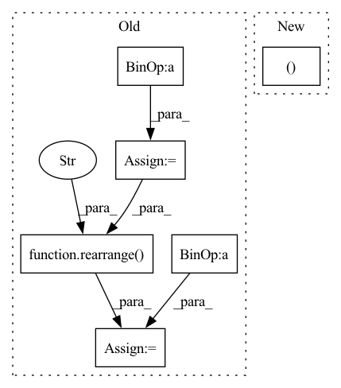

Pattern ID :617

Before Change
avg_target = target.mean(dim=3)
bin_size = self.max_pixel_val / self.output_channel_bits
channel_bins = torch.arange(bin_size, self.max_pixel_val, bin_size).to(avg_target.device)
discretized_target = torch.bucketize(avg_target, channel_bins)
discretized_target = F.one_hot(discretized_target,
self.output_channel_bits)
c, bi = self.channels, self.output_channel_bits
discretized_target = rearrange(discretized_target,
"b n c bi -> b n (c bi)",
c=c,
bi=bi)
bin_mask = 2**torch.arange(c * bi - 1, -1,
-1).to(discretized_target.device,
discretized_target.dtype)
target_label = torch.sum(bin_mask * discretized_target, -1)
predicted_patches = predicted_patches[mask]
target_label = target_label[mask]
loss = F.cross_entropy(predicted_patches, target_label)
return loss
After Change
self.std = torch.tensor(std).view(-1, 1, 1) if std else None
def forward(self, predicted_patches, target, mask):
p, c, mpv, bits, device = self.patch_size, self.channels, self.max_pixel_val, self.output_channel_bits, target.device
bin_size = mpv / (2 ** bits)
// un-normalize input
In pattern: SUPERPATTERN
Frequency: 3
Non-data size: 6
Instances
Fragment ID: 3000525
Project Name: lucidrains/vit-pytorch
Commit Name: 64a2ef6462bde61db4dd8f0887ee71192b273692
Time: 2021-06-16
Author: lucidrains@gmail.com
File Name: vit_pytorch/mpp.py
M Class Name: MPPLoss
N Class Name: MPPLoss
M Method Name: forward(4)
N Method Name: forward(4)
M Parent Class: nn.Module
N Parent Class: nn.Module
M File Name: vit_pytorch/mpp.py
N File Name: vit_pytorch/mpp.py
M Start Line: 53
M End Line: 82
N Start Line: 53
N End Line: 72
'>
Before Change
weight = weight.masked_fill(~mask, mask_value)
if causal and q_start_index < (k_start_index + k_chunk_size - 1):
q_range = torch.arange(q_start_index, q_start_index + q_chunk_size, device = device)
k_range = torch.arange(k_start_index, k_start_index + k_chunk_size, device = device)
causal_mask = rearrange(q_range, "i -> i 1") < rearrange(k_range, "j -> 1 j")
weight = weight.masked_fill(causal_mask, mask_value)
exp_weight = weight.exp()
After Change
weight = weight.masked_fill(~mask, mask_value)
if causal and q_start_index < (k_start_index + k_chunk_size - 1):
causal_mask = torch.ones((q_chunk_size, k_chunk_size), dtype = torch.bool, device = device).triu(q_start_index - k_start_index + 1)
weight = weight.masked_fill(causal_mask, mask_value)
exp_weight = weight.exp()
'>
Fragment ID: 3000477
Project Name: lucidrains/memory-efficient-attention-pytorch
Commit Name: e4d09988df0bc8bdfc32cfd2d7202d061a640052
Time: 2022-03-22
Author: lucidrains@gmail.com
File Name: memory_efficient_attention_pytorch/memory_efficient_cosine_sim_attention.py
M Class Name: AnonimousClass
N Class Name: AnonimousClass
M Method Name: summarize_qkv_chunk(7)
N Method Name: summarize_qkv_chunk(7)
M Parent Class:
N Parent Class:
M File Name: memory_efficient_attention_pytorch/memory_efficient_cosine_sim_attention.py
N File Name: memory_efficient_attention_pytorch/memory_efficient_cosine_sim_attention.py
M Start Line: 68
M End Line: 70
N Start Line: 68
N End Line: 68
'>
Before Change
weight = weight.masked_fill(~mask, mask_value)
if causal and q_start_index < (k_start_index + k_chunk_size - 1):
q_range = torch.arange(q_start_index, q_start_index + q_chunk_size, device = device)
k_range = torch.arange(k_start_index, k_start_index + k_chunk_size, device = device)
causal_mask = rearrange(q_range, "i -> i 1") < rearrange(k_range, "j -> 1 j")
weight = weight.masked_fill(causal_mask, mask_value)
weight_max = weight.amax(dim = -1, keepdim = True).detach()
After Change
weight = weight.masked_fill(~mask, mask_value)
if causal and q_start_index < (k_start_index + k_chunk_size - 1):
causal_mask = torch.ones((q_chunk_size, k_chunk_size), dtype = torch.bool, device = device).triu(q_start_index - k_start_index + 1)
weight = weight.masked_fill(causal_mask, mask_value)
weight_max = weight.amax(dim = -1, keepdim = True).detach()
'>
Fragment ID: 3000500
Project Name: lucidrains/memory-efficient-attention-pytorch
Commit Name: e4d09988df0bc8bdfc32cfd2d7202d061a640052
Time: 2022-03-22
Author: lucidrains@gmail.com
File Name: memory_efficient_attention_pytorch/memory_efficient_attention.py
M Class Name: AnonimousClass
N Class Name: AnonimousClass
M Method Name: summarize_qkv_chunk(7)
N Method Name: summarize_qkv_chunk(7)
M Parent Class:
N Parent Class:
M File Name: memory_efficient_attention_pytorch/memory_efficient_attention.py
N File Name: memory_efficient_attention_pytorch/memory_efficient_attention.py
M Start Line: 67
M End Line: 69
N Start Line: 67
N End Line: 67